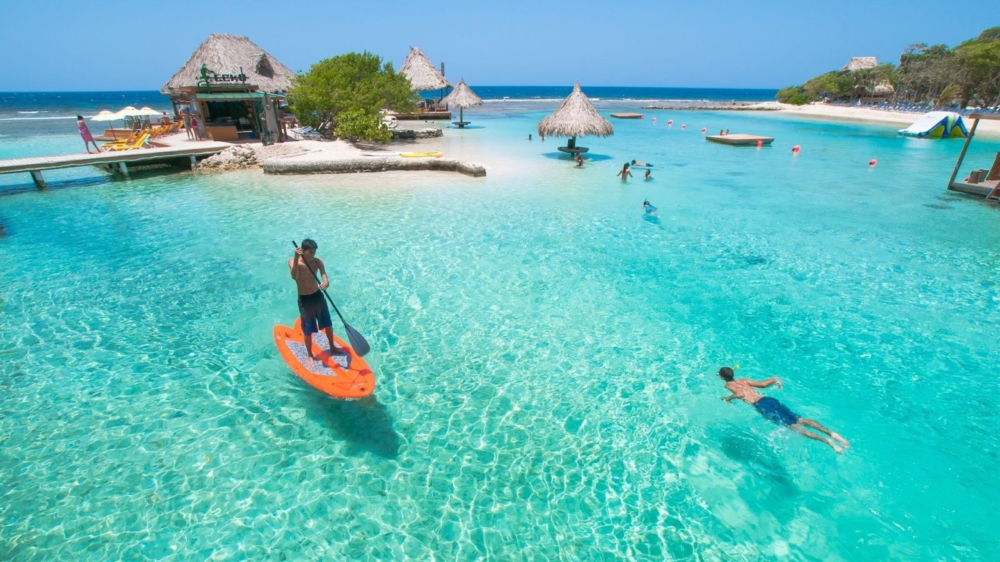
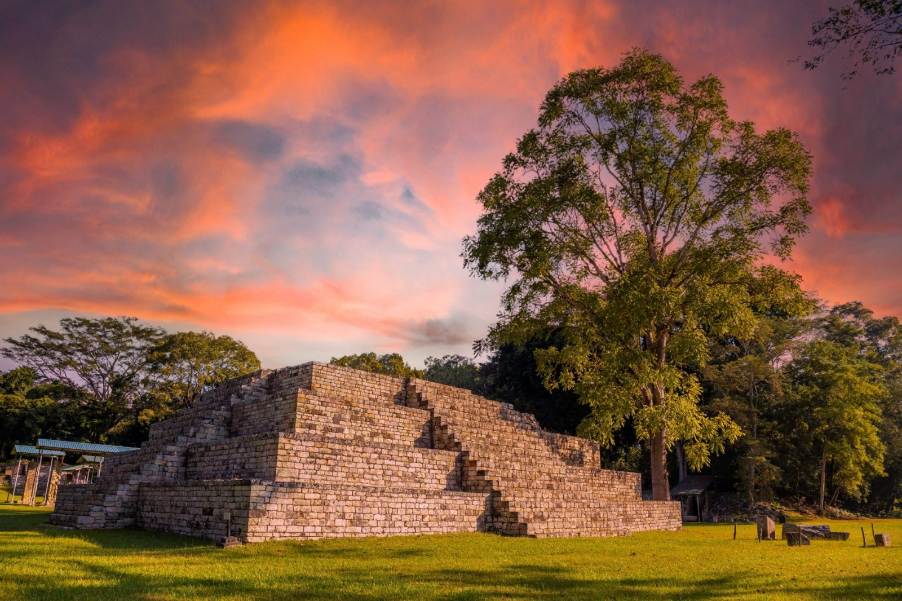
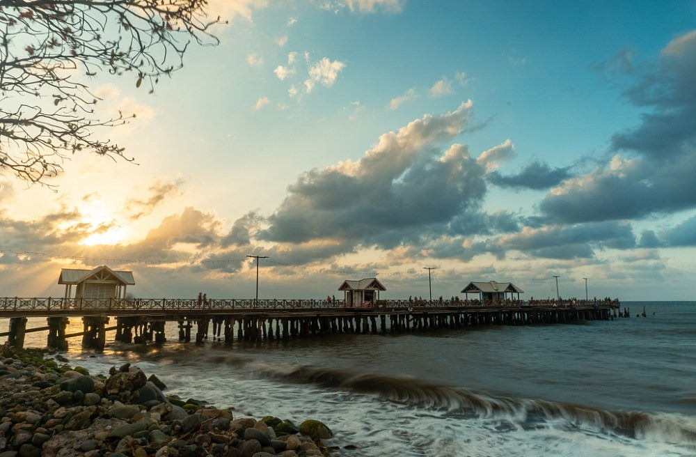
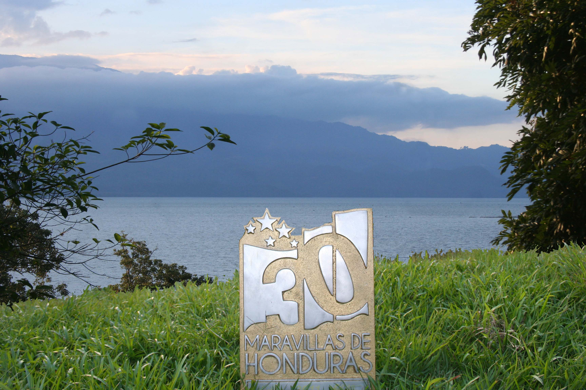
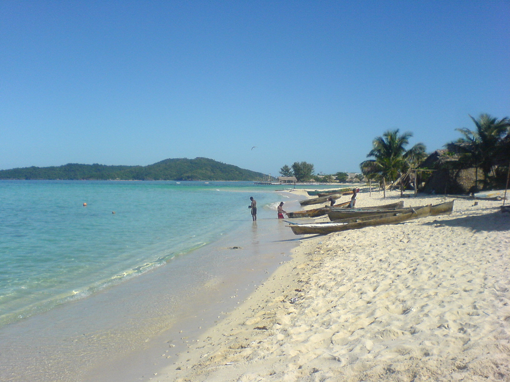
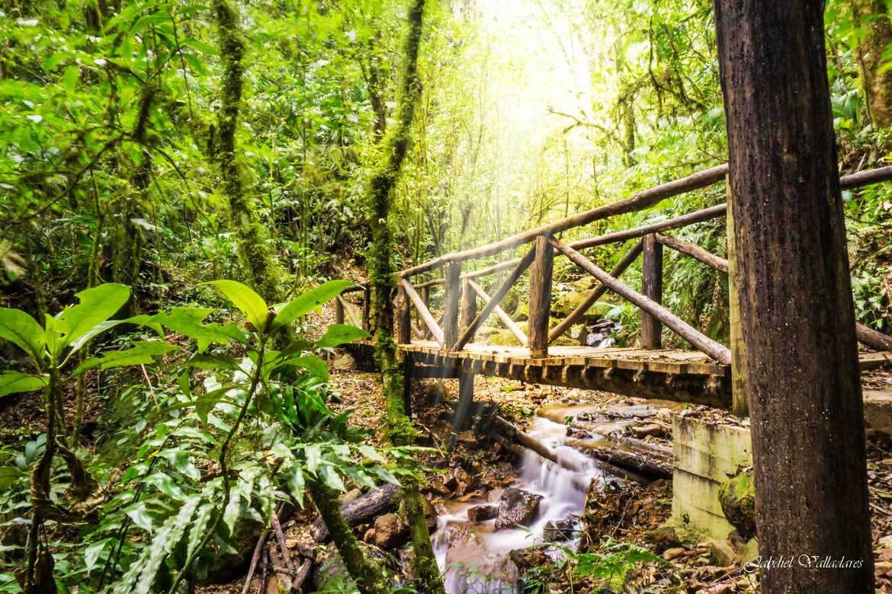
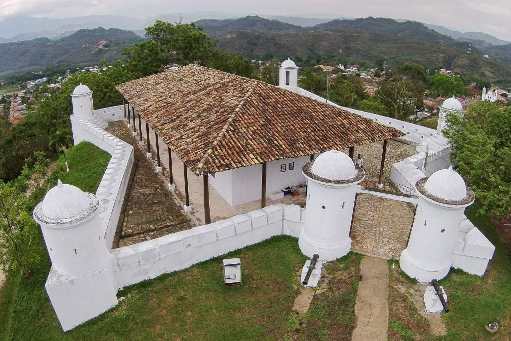

Roatán
Islas de la Bahía
En Roatán hay playas, aguas cristalinas y arrecifes de coral. El mar se recorre en buceo, snorkel y otras actividades acuáticas.

Honduras reúne playas, islas, montañas, parques naturales y sitios históricos. Estos lugares atraen a turistas nacionales y extranjeros, y contribuyen al desarrollo económico y cultural.
Islas de la Bahía
En Roatán hay playas, aguas cristalinas y arrecifes de coral. El mar se recorre en buceo, snorkel y otras actividades acuáticas.

Departamento de Copán
En el departamento de Copán está el Parque Arqueológico de Copán, uno de los sitios mayas más importantes de la región.

Capital del Ecoturismo de Honduras
A La Ceiba se la conoce como la “Capital del Ecoturismo de Honduras”. Tiene playas, ríos y áreas naturales, y desde la ciudad se accede al Parque Nacional Pico Bonito.

El lago natural más grande de Honduras
El Lago de Yojoa es el lago natural más grande de Honduras y está rodeado de montañas. Allí se hacen paseos en lancha y pesca, se observan aves y se visitan lugares naturales cercanos.

Mar Caribe
Cayos Cochinos es un pequeño archipiélago en el mar Caribe. Tiene playas, aguas transparentes y diversidad marina: un lugar de naturaleza y de actividades acuáticas.

Cerca de Tegucigalpa
El Parque Nacional La Tigra queda cerca de Tegucigalpa. Tiene bosques nublados, senderos, flora y fauna, y se recorre a pie, en senderismo.

Ciudad histórica
Gracias, en Lempira, es una ciudad histórica de edificios antiguos, iglesias y arquitectura colonial. Queda cerca del Parque Nacional Celaque.
Conocer estos lugares y cuidarlos conserva el patrimonio natural y cultural, y fortalece el turismo y la economía.